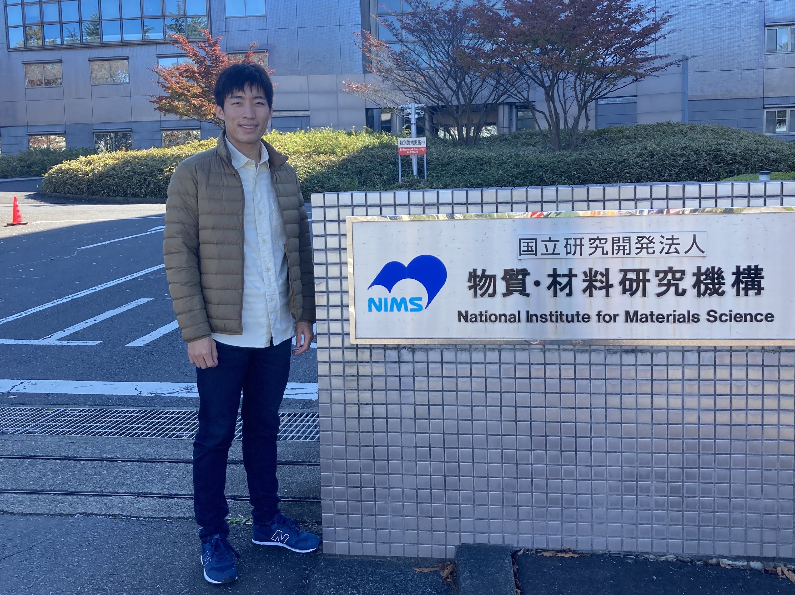

Ryota Masuki

PhD student in Arita group, Department of Applied Physics, The University of Tokyo.
Research interests
- Condensed matter theory
- Method development of first-principles calculations
- Phonons, crystal structures, structural phase transitions
- Finite temperature properties
- Transport properties
Programming skills
- C, C++
- Python
- Fortran
- MPI, OpenMP
Softwares
- ALAMODE
- VASP
- Quantum Espresso
- EPW
- Wannier90
Publication list
Preprints
- R. Masuki, T. Nomoto, R. Arita, T. Tadano "Full optimization of quasiharmonic free energy with anharmonic lattice model: Application to thermal expansion and pyroelectricity of wurtzite GaN and ZnO" arXiv:2302.04537 (2023).
Original Papers
- R. Masuki, T. Nomoto, R. Arita, T. Tadano "Ab initio structural optimization at finite temperatures based on anharmonic phonon theory: Application to the structural phase transitions of BaTiO3" Physical Review B 106, 224104 (2022). [arXiv]
- R. Masuki, T. Nomoto, R. Arita, T. Tadano "Anharmonic Gruneisen theory based on self-consistent phonon theory: Impact of phonon-phonon interaction neglected in the quasiharmonic theory" Physical Review B 105, 064112 (2022). [arXiv]
- K. Ishihara, T. Takenaka, Y. Miao, Y. Mizukami, K. Hashimoto, M. Yamashita, M. Konczykowski, R. Masuki, M. Hirayama, T. Nomoto, R. Arita, O. Pavlosiuk, P. Wiśniewski, D. Kaczorowski, and T. Shibauchi "Tuning the Parity Mixing of Singlet-Septet Pairing in a Half-Heusler Superconductor" Physical Review X 11, 041048 (2021).
- R. Masuki, T. Nomoto, and R. Arita. "Origin of anomalous temperature dependence of the Nernst effect in narrow-gap semiconductors" Physical Review B 103, L041202 (2021). [arXiv]
Education
Master of Engineering, Department of Applied Physics, The University of Tokyo
March 2022
Bachelor of Science, Department of Physics, The University of Tokyo
March 2020
Fellowships
JSPS research fellow DC1
日本学術振興会 特別研究員 DC1
April 2022 ~ Present
Research Assistant, MERIT-WINGS program in the University of Tokyo
January 2021 ~ Present
Awards
Master Thesis Award, Department of Applied Physics, The University of Tokyo
田中昭二賞
March 2022
Award of Faculty of Science, The University of Tokyo
理学部学修奨励賞
March 2020
Funding
Grant-in-Aid for JSPS Fellows (Grant No. 22J20892)
April 2022 ~ Present [project page]
Other contributions
Chief organizer, 66th Condensed Matter Physics Summer School
第66回物性若手夏の学校準備局代表
September 2020 ~ August 2021
- article in "物性研だより"(in Japanese)
- article in "日本物理学会誌" (in Japanese. The content is available only for JPS members)
Publication list
Preprints
Original Papers
- R. Masuki, T. Nomoto, R. Arita, T. Tadano "Ab initio structural optimization at finite temperatures based on anharmonic phonon theory: Application to the structural phase transitions of BaTiO3" Physical Review B 106, 224104 (2022). [arXiv]
- R. Masuki, T. Nomoto, R. Arita, T. Tadano "Anharmonic Gruneisen theory based on self-consistent phonon theory: Impact of phonon-phonon interaction neglected in the quasiharmonic theory" Physical Review B 105, 064112 (2022). [arXiv]
- K. Ishihara, T. Takenaka, Y. Miao, Y. Mizukami, K. Hashimoto, M. Yamashita, M. Konczykowski, R. Masuki, M. Hirayama, T. Nomoto, R. Arita, O. Pavlosiuk, P. Wiśniewski, D. Kaczorowski, and T. Shibauchi "Tuning the Parity Mixing of Singlet-Septet Pairing in a Half-Heusler Superconductor" Physical Review X 11, 041048 (2021).
- R. Masuki, T. Nomoto, and R. Arita. "Origin of anomalous temperature dependence of the Nernst effect in narrow-gap semiconductors" Physical Review B 103, L041202 (2021). [arXiv]
Presentations
-
Invited talks and seminars
Oral presentations (international)
Oral presentations (domestic)
Poster presentations (international)
Poster presentations (domestic)
Invited talks and seminars
-
"非調和フォノン理論に基づく有限温度における構造最適化"
Online CMT seminar
April 19, 2022 (online) -
"Ab-initio structural optimization at finite temperatures based on anharmonic phonon theory"
RIKEN Wednesday seminar
March 2, 2022 (online)
Oral presentations (international)
-
"Efficient full relaxation of crystal structures with quasiharmonic approximation: Application to pyroelectricity of GaN and ZnO"
APS March Meeting 2023
scheduled on March 7, 2023 (Las Vegas, US) -
"Structural optimization at finite temperature based on anharmonic phonon theory"
APS March Meeting 2022
March 17, 2022 (online) -
"Origin of anomalous temperature dependence of Nernst effect in narrow-gap semiconductors"
APS March Meeting 2021
March 18, 2021 (online)
Oral presentations (domestic)
-
"非調和フォノン理論に基づく有限温度における構造最適化"
QLC, 2nd Quantum Materials Forum
January 6, 2023 (Tohoku University, Sendai, Japan) -
"熱膨張とフォノン振動数シフト計算における準調和近似の正当性と適用限界"
日本物理学会 2021年秋季大会
September 23, 2021 (online) -
"narrow-gap半導体のNernst効果の非自明な温度依存性の起源"
日本物理学会 第76回年次大会
March 13, 2021 (online)
Poster presentations (international)
-
"Structural optimization at finite temperature based on anharmonic phonon theory"
The 29th International Conference on Low Temperature Physics (LT29)
August 23, 2022 (Sapporo, Japan)
Poster presentations (domestic)
-
"フォノン理論に基づいた有限温度における結晶構造の第一原理計算"
物性研究所スパコン共同利用・CCMS合同研究会「計算の時代における物性科学」
scheduled on April 3, 2023 (ISSP, Kashiwanoha, Japan) -
"非調和フォノン理論に基づく有限温度における構造最適化"
物性研究所スパコン共同利用・CCMS合同研究会「計算物質科学の新展開」
May 12, 2022 (ISSP, Kashiwanoha, Japan)
Crystal structures at finite temperatures
Self-consistent phonon (SCP) theory
The state-of-the-art structural optimization of DFT cannot be applied to the finite-temperature phases of materials because the effect of lattice vibrations is neglected.
Thus, the description of structural phase transitions, which occur in a wide range of materials such as perovskites, other ferroelectrics, TMDs, etc., has been a big challenge in computational material science.
In the research, we have formulated and implemented a structural optimization theory at finite temperature, which minimizes the T-dependent free energy calculated by an anharmonic phonon theory.
We have successfully reproduced the three-step structural phase transition and p-T phase diagram of BaTiO3 using the method [1].
[1] R. Masuki, T. Nomoto, R. Arita, T. Tadano
"Ab initio structural optimization at finite temperatures based on anharmonic phonon theory: Application to the structural phase transitions of BaTiO3"
Physical Review B 106, 224104 (2022).
[arXiv]
Quasiharmonic approximation (QHA)
The Quasiharmonic approximation (QHA) is the most widely used approximation in the first-principles calculation of thermal expansion. However, the validity of the approximation has been unclear because the phonon frequency shift, which is directly related to the thermal expansion by the Gruneisen formula, is not accurately reproduced in QHA.
In our research, we have shown that the quasiharmonic approximation is an accurate approximation for the thermal expansion, but not necessarily for the phonon frequency shift by comparing it with the self-consistent phonon theory. Our result validates the use of quasiharmonic approximation for calculating the thermal expansion of weakly anharmonic materials [1].
[1] R. Masuki, T. Nomoto, R. Arita, T. Tadano
"Anharmonic Gruneisen theory based on self-consistent phonon theory: Impact of phonon-phonon interaction neglected in the quasiharmonic theory"
Physical Review B 105, 064112 (2022).
[arXiv]